Chapter 3 Univariate Data Visualization
Data visualization is an incredibly rich tool to explore and understand data. Data visualization is often a first way to see if there are extreme data values, how much variation there is in the data, and where typical values lie in the distribution. In this section of the course, we plan to explore the following related to distributions: 1. Univariate distributions + Shape + Center + Spread + Extreme Values 2. Multivariate distributions + Shape + Center + Spread + Extreme Values + Comparing distributions
3.1 Univariate Distributions
The college scorecard (https://collegescorecard.ed.gov/) publishes data on higher education institutions to help make the institutions more transparent and provide a place for parents, students, educators, etc can get information about specific instituations from a third party (i.e. US Department of Education).
3.1.1 Read in Data
The below code will read in the data for us to use in the future. The R function to read in the data is read_csv(). Function arguments are passed within the parentheses and for the read_csv() function the first argument is the path to the data. The data for this example are posted on GitHub in a comma separated file. This means the data is stored in a text format and each variable (i.e. column in the data) is separated by a comma. This is a common format data is stored.
The data is stored to an object named college_score. In R (and other statistical programming languages), it is common to use objects to store results to use later. In this instance, we would like to read in the data and store it to use it later. For example, we will likely want to explore the data visually to see if we can extract some trends from the data. The assignment to an object in R is done with the <- assignment operator. Finally, there is one additional argument, guess_max which helps to ensure that the data are read in appropriately. More on this later.
## Parsed with column specification:
## cols(
## instnm = col_character(),
## city = col_character(),
## stabbr = col_character(),
## preddeg = col_character(),
## region = col_character(),
## locale = col_character(),
## adm_rate = col_double(),
## actcmmid = col_double(),
## ugds = col_double(),
## costt4_a = col_double(),
## costt4_p = col_double(),
## tuitionfee_in = col_double(),
## tuitionfee_out = col_double(),
## debt_mdn = col_double(),
## grad_debt_mdn = col_double(),
## female = col_double()
## )3.1.2 View the Data
The head() function is R is useful to get a quick snapshot of the data to ensure that is has been read in appropriately.
## # A tibble: 6 x 16
## instnm city stabbr preddeg region locale adm_rate actcmmid ugds
## <chr> <chr> <chr> <chr> <chr> <chr> <dbl> <dbl> <dbl>
## 1 Alaba… Norm… AL Bachel… South… City:… 0.903 18 4824
## 2 Unive… Birm… AL Bachel… South… City:… 0.918 25 12866
## 3 Amrid… Mont… AL Bachel… South… City:… NA NA 322
## 4 Unive… Hunt… AL Bachel… South… City:… 0.812 28 6917
## 5 Alaba… Mont… AL Bachel… South… City:… 0.979 18 4189
## 6 The U… Tusc… AL Bachel… South… City:… 0.533 28 32387
## # … with 7 more variables: costt4_a <dbl>, costt4_p <dbl>,
## # tuitionfee_in <dbl>, tuitionfee_out <dbl>, debt_mdn <dbl>,
## # grad_debt_mdn <dbl>, female <dbl>3.2 Univariate Distributions
Univariate distributions mean exploring the data for a single variable by itself. This can be useful as an initial exploration of the data to understand information about which values are typical, if there are any extreme values, what the range of the variable has, and other characteristics. Univariate distributions are useful, however in most data situations, these form the initial exploration only and multivariate thinking is needed, which we will explore next.
Using the college scorecard data, suppose we were interested in exploring the admission rate of higher education institutions to prioritize which institutions would be appropriate to apply to. One figure that is useful initially in this regard is the histrogram. A histogram can be created with the ggformula R package using the gf_histrogram() function. This function needs two arguments, the first is an equation that identifies the variables to be plotted and the second is the data using the format data = ... where the ... is the name of the data object. Below is an example of the code used to create a histrogram.
## Warning: Removed 5039 rows containing non-finite values (stat_bin).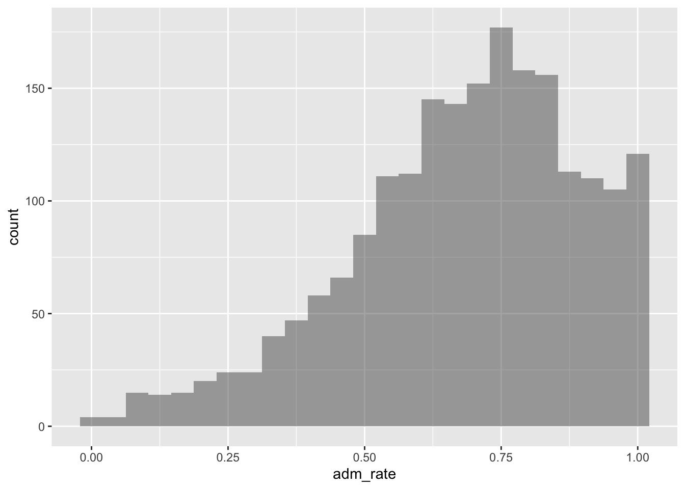
The equation argument above with the ggformula package takes the following general structure:
y-axis ~ x-axis
where the variable identified to the left of the ~ is the variable defined on the y-axis and the variable to the right of the ~ is the variable to be placed on the x-axis. If a variable is not specified (as is the case here) on one side of the equation, that axis is ignored. This is most commonly done when exploring univariate distributions where only a single variable is to be plotted.
3.2.1 Interpretting Histograms
Histograms are created by collapsing the data into bins and the number of data points that fall in the range of the bin are counted. To show this more clearly in the figure created previously, we can add some color to show the different bins with the arguments, color = 'black'.
## Warning: Removed 5039 rows containing non-finite values (stat_bin).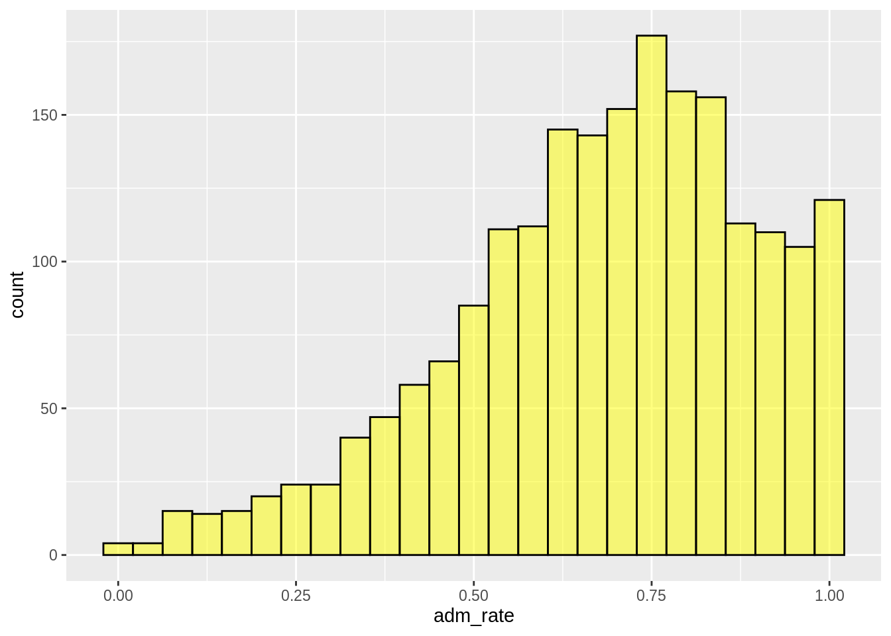
As you can see, now the different bins are able to be seen more easily.
3.2.2 Adjusting Number of Bins
When creating histograms, the figure depends on where the boundaries of the bins can be found. It is often useful to change the number of bins to explore the impact these may have. This can be done two ways with the gf_histogram() function, either through the bins or binwidth arguments. The bins argument allows the user to specify the number of bins and the bindwidth argument allows the user to specify how wide the bins should be and the number of bins are calculated based on the bin size and the range of the data. Below are two different ways to specify these:
## Warning: Removed 5039 rows containing non-finite values (stat_bin).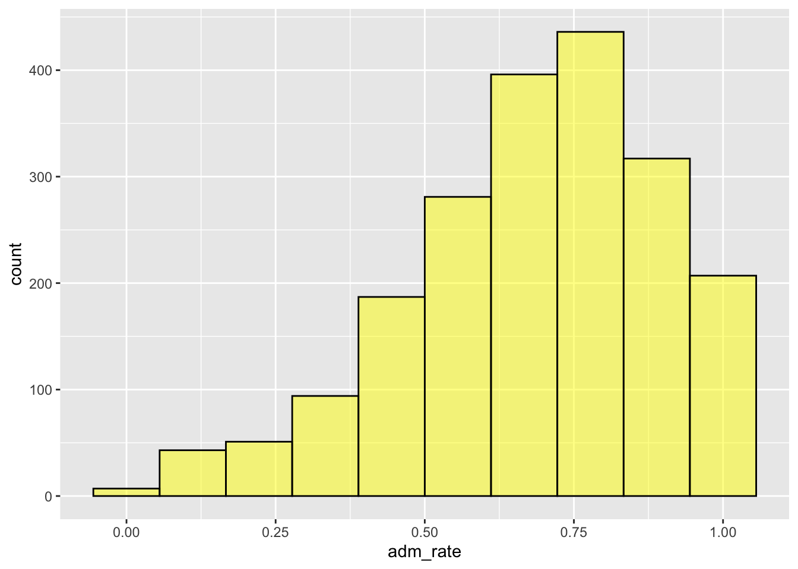
## Warning: Removed 5039 rows containing non-finite values (stat_bin).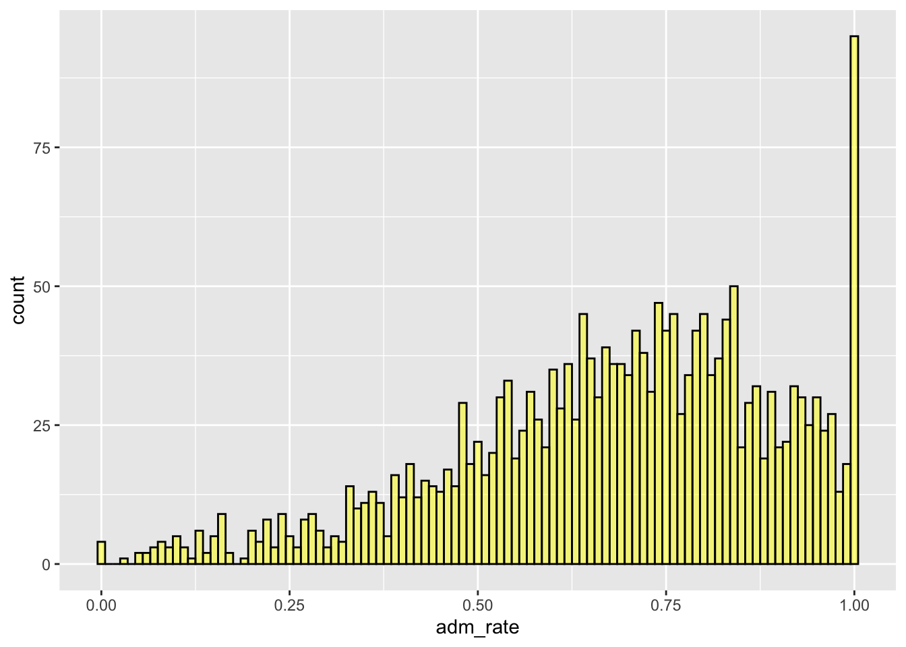
3.3 Plot Customization
So far we have not customized our plots to label the axes appropriately or add a title to the figure. These actions can be accomplished with the gf_labs() function.
3.3.1 Change x-axis label
Adjusting the x-axis label is done with the gf_labs() function by using the argument x = '...' where the ... is the text that the label should take. Below is an example:
gf_histogram(~ adm_rate, data = college_score, color = 'black', bins = 25) %>%
gf_labs(x = 'Admission Rate (in %)')## Warning: Removed 5039 rows containing non-finite values (stat_bin).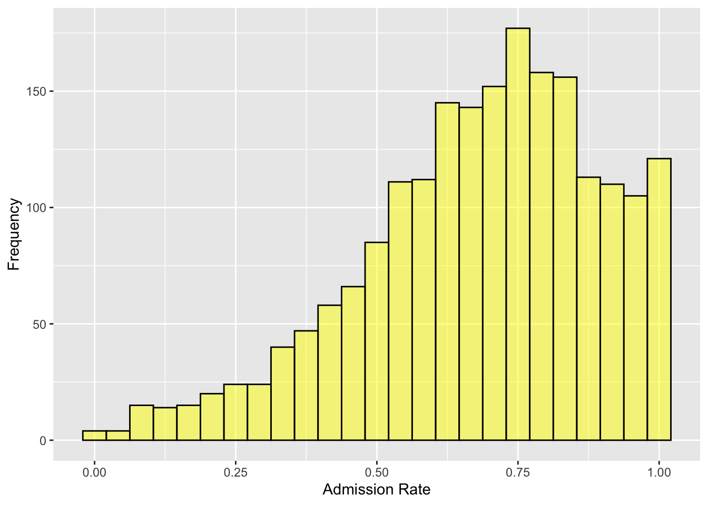
3.3.2 Change plot title
The plot title can be changed similar to the x-axis label, but instead of using the x = '...', title = '...' is used instead. Here is an example:
gf_histogram(~ adm_rate, data = college_score, color = 'black', bins = 25) %>%
gf_labs(x = 'Admission Rate (in %)',
title = 'Univariate distribution of higher education admission rates')## Warning: Removed 5039 rows containing non-finite values (stat_bin).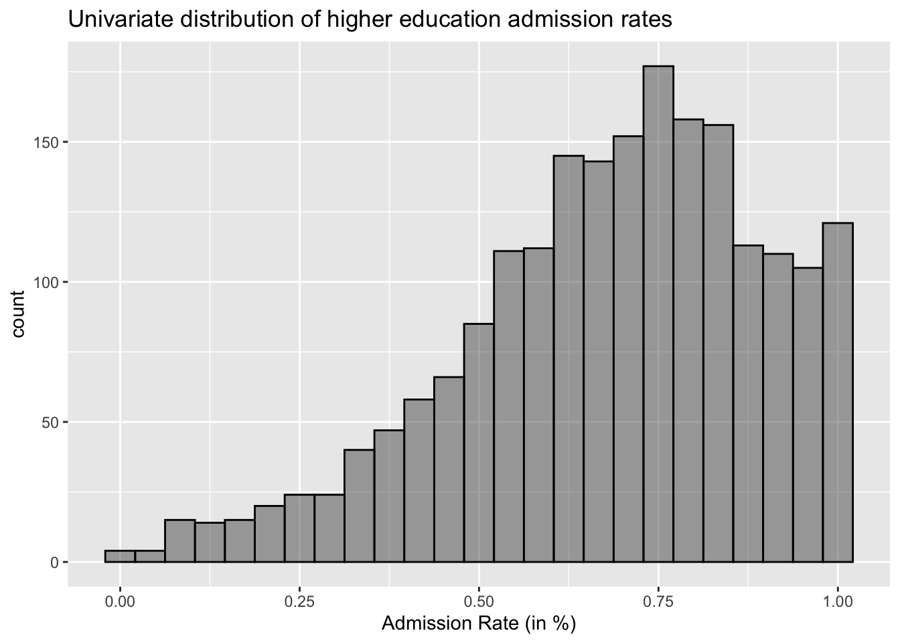
3.3.3 Change plot theme
The default plot theme has a grey background with white grid lines. I personally do not prefer this color scheme and instead prefer a white background with darker grid lines. This can be changes with the gf_theme() function. Below is an example:
gf_histogram(~ adm_rate, data = college_score, color = 'black', bins = 25) %>%
gf_labs(x = 'Admission Rate (in %)',
title = 'Univariate distribution of higher education admission rates') %>%
gf_theme(theme_bw())## Warning: Removed 5039 rows containing non-finite values (stat_bin).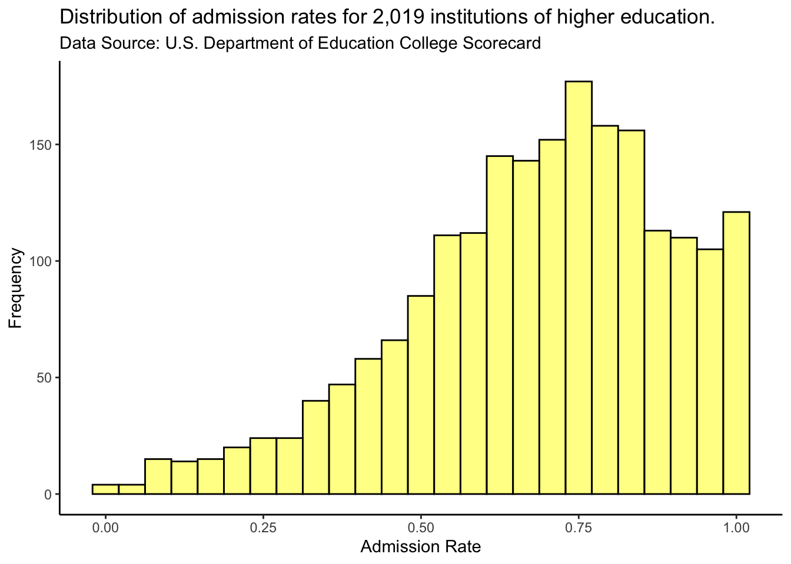
It is possible to set a theme and change the default that is used. This can be done with the theme_set() function as the following:
theme_set(theme_bw())
gf_histogram(~ adm_rate, data = college_score, color = 'black', bins = 25) %>%
gf_labs(x = 'Admission Rate (in %)',
title = 'Univariate distribution of higher education admission rates')## Warning: Removed 5039 rows containing non-finite values (stat_bin).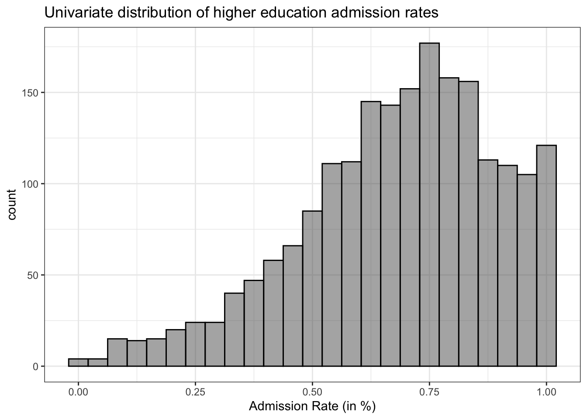
3.3.3.1 Book Theme
A custom theme has been created for the book. This has been included in the supplemental book package that can be installed and loaded with the following commands:
The book theme can then be applied as before:
theme_set(theme_statthinking())
gf_histogram(~ adm_rate, data = college_score, color = 'black', bins = 25) %>%
gf_labs(x = 'Admission Rate (in %)',
title = 'Univariate distribution of higher education admission rates')## Warning: Removed 5039 rows containing non-finite values (stat_bin).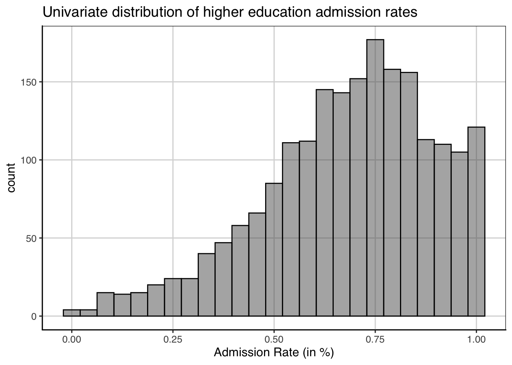
3.4 Density plots
Another useful univariate plot is the density plot. This plot usually gives similar information as the histogram, but the visualization does not depend on the bins. One nice feature of density plots is that the area under the density figure sums to 1 as is obtained from kernel density estimation. In this class we will use a normal kernel to estimate the distribution of interest. Density figures can be created with the gf_density() function and the same primary arguments when creating histograms are used. More specifically this includes the formula identifying the variables of interest and the data to be used.
## Warning: Removed 5039 rows containing non-finite values (stat_density).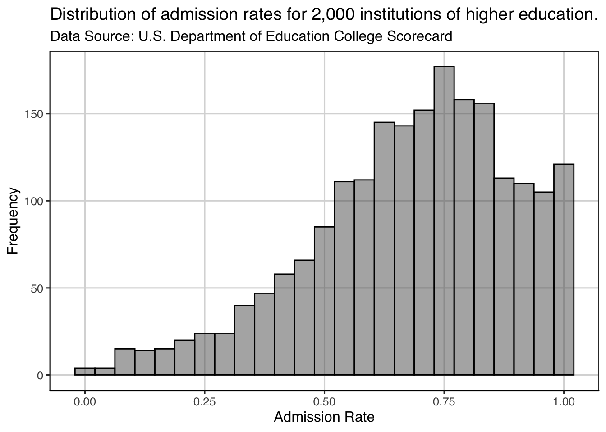
The x-axis labels and plot title can be added the same as with the histogram.
gf_density(~ adm_rate, data = college_score) %>%
gf_labs(x = 'Admission Rate (in %)',
title = 'Univariate distribution of higher education admission rates')## Warning: Removed 5039 rows containing non-finite values (stat_density).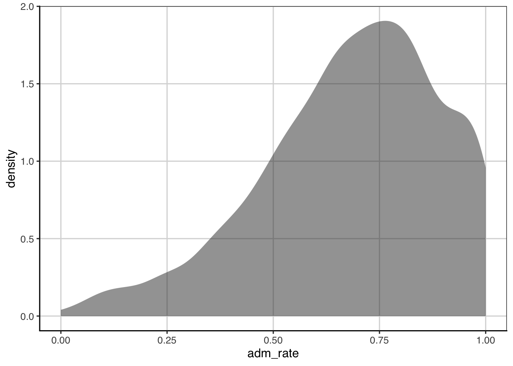
3.5 Multivariate Data Visualization
Real world data are never as simple exploring a distribution of a single variable, particularly when trying to understand individual variation. In most cases things interact, move in tandem, and many phenomena help to explain the variable of interest. For example, when thinking about admission rates, what may be some important factors that would explain some of the reasons why higher education institutions differ in their admission rates? Take a few minutes to brainstorm some ideas.
gf_histogram(~ adm_rate, data = college_score, bins = 30, fill = ~ preddeg) %>%
gf_labs(x = 'Admission Rate (in %)',
title = 'Multivariate distribution of higher education admission rates by degree type',
fill = "Primary Deg")## Warning: Removed 5039 rows containing non-finite values (stat_bin).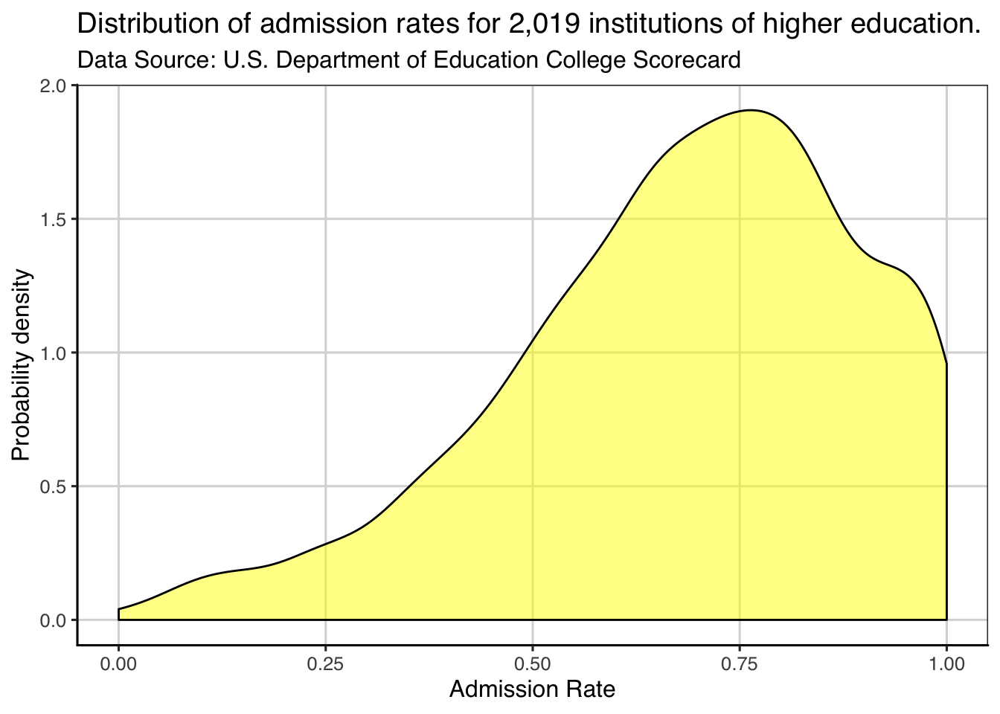
Often density plots are easier to visualize when there are more than one group. To plot more than one density curve, we need to specify the color argument instead of fill.
gf_density(~ adm_rate, data = college_score, color = ~ preddeg) %>%
gf_labs(x = 'Admission Rate (in %)',
title = 'Multivariate distribution of higher education admission rates by degree type',
color = "Primary Deg")## Warning: Removed 5039 rows containing non-finite values (stat_density).
gf_density(~ adm_rate, data = college_score, fill = ~ preddeg) %>%
gf_labs(x = 'Admission Rate (in %)',
title = 'Multivariate distribution of higher education admission rates by degree type',
fill = "Primary Deg")## Warning: Removed 5039 rows containing non-finite values (stat_density).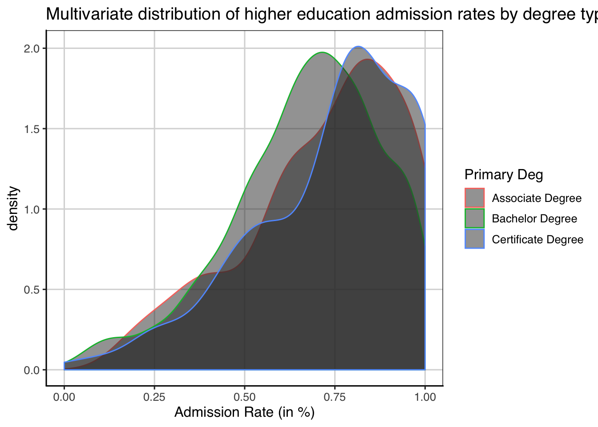
gf_density(~ adm_rate, data = college_score, fill = ~ preddeg, color = ~ preddeg) %>%
gf_labs(x = 'Admission Rate (in %)',
title = 'Multivariate distribution of higher education admission rates by degree type',
color = "Primary Deg",
fill = "Primary Deg")## Warning: Removed 5039 rows containing non-finite values (stat_density).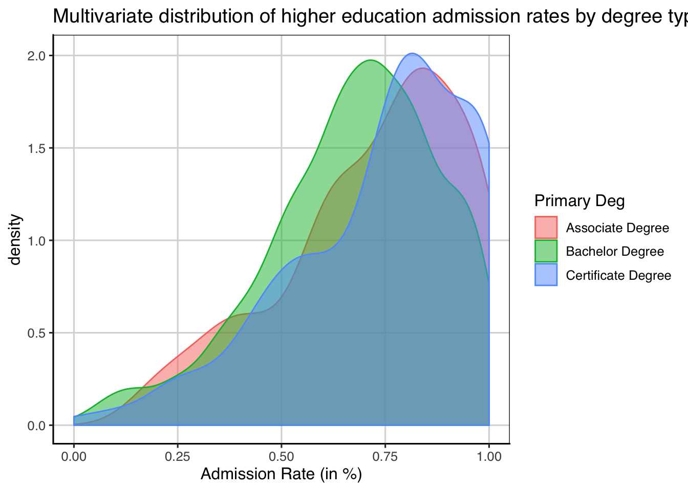
gf_density(~ adm_rate, data = college_score, color = ~ preddeg, fill = 'gray85', size = 1) %>%
gf_labs(x = 'Admission Rate (in %)',
title = 'Multivariate distribution of higher education admission rates by degree type',
color = "Primary Deg")## Warning: Removed 5039 rows containing non-finite values (stat_density). ## Violin Plots
## Violin Plots
Violin plots are another way to make comparisons of distributions across groups. Violin plots are also easier to show more groups on a single graph. Violin plots are density plots that are mirrored to be fully enclosed. Best to explore with an example.ArithmeticError
gf_violin(adm_rate ~ preddeg, data = college_score) %>%
gf_labs(y = 'Admission Rate (in %)',
title = 'Multivariate distribution of higher education admission rates by degree type',
x = "Primary Deg")## Warning: Removed 5039 rows containing non-finite values (stat_ydensity).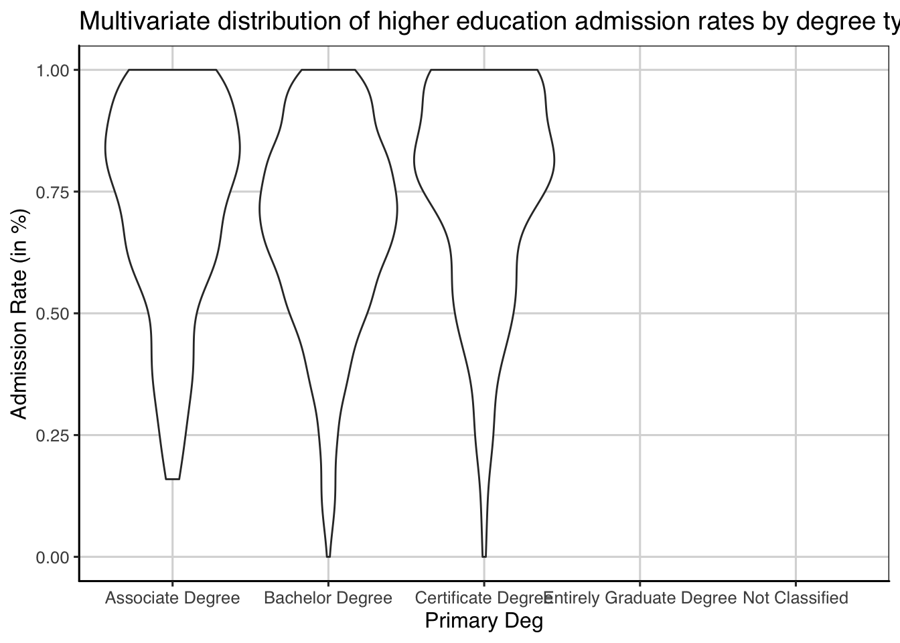
Aesthetically, these figures are a bit more pleasing to look at if they include a light fill color. This is done similar to the density plots shown above with the fill = argument.ArithmeticError
gf_violin(adm_rate ~ preddeg, data = college_score, fill = 'gray85') %>%
gf_labs(y = 'Admission Rate (in %)',
title = 'Multivariate distribution of higher education admission rates by degree type',
x = "Primary Deg")## Warning: Removed 5039 rows containing non-finite values (stat_ydensity).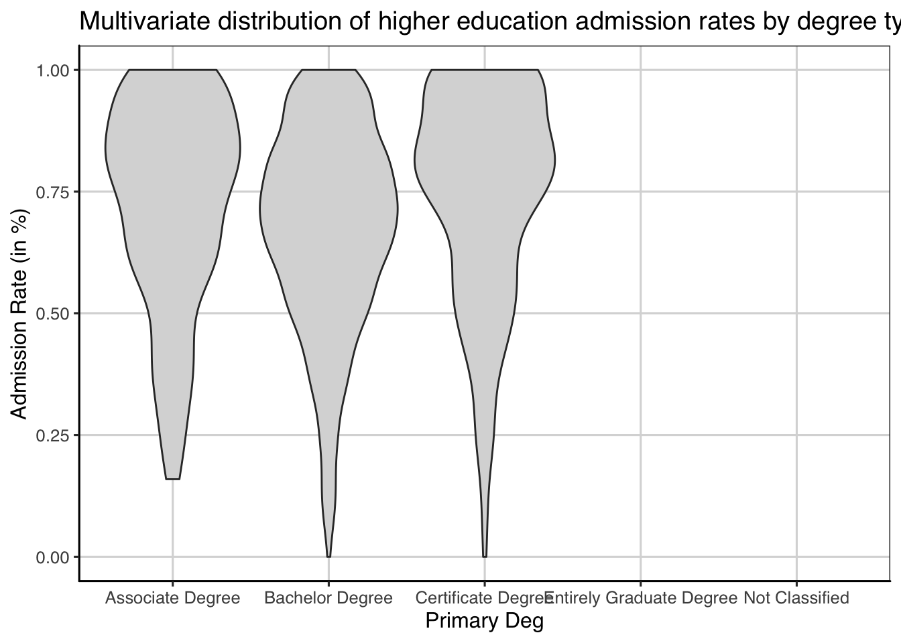
Adding quantiles are useful to aid in the comparison with the violin plots. These can be added with the draw_quantiles argument.
gf_violin(adm_rate ~ preddeg, data = college_score, fill = 'gray85', draw_quantiles = c(.1, .5, .9)) %>%
gf_labs(y = 'Admission Rate (in %)',
title = 'Multivariate distribution of higher education admission rates by degree type',
x = "Primary Deg")## Warning: Removed 5039 rows containing non-finite values (stat_ydensity).### Violin Plots with many groups
Many groups are more easily shown in the violin plot framework.
With many groups, it is often of interest to put the long x-axis labels representing each group on the y-axis so that it reads the correct direction and the labels do not run into each other. This can be done with the gf_refine() function with coord_flip().
gf_violin(adm_rate ~ region, data = college_score, fill = 'gray80', draw_quantiles = c(.1, .5, .9)) %>%
gf_labs(y = 'Admission Rate (in %)',
title = 'Multivariate distribution of higher education admission rates by degree type',
x = "US Region") %>%
gf_refine(coord_flip())## Warning: Removed 5039 rows containing non-finite values (stat_ydensity).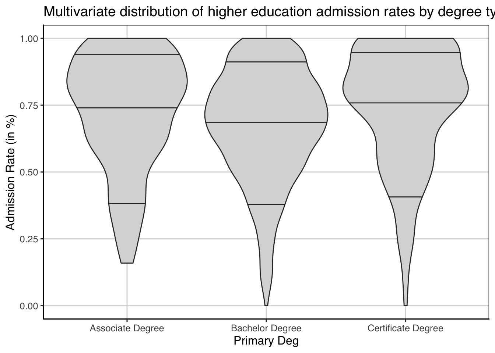
3.6 Facetting
Facetting is another way to explore distributions of two or more variables.
gf_violin(adm_rate ~ region, data = college_score, fill = 'gray80', draw_quantiles = c(.1, .5, .9)) %>%
gf_labs(y = 'Admission Rate (in %)',
title = 'Multivariate distribution of higher education admission rates by degree type',
x = "US Region") %>%
gf_refine(coord_flip()) %>%
gf_facet_wrap(~ preddeg)## Warning: Removed 5039 rows containing non-finite values (stat_ydensity).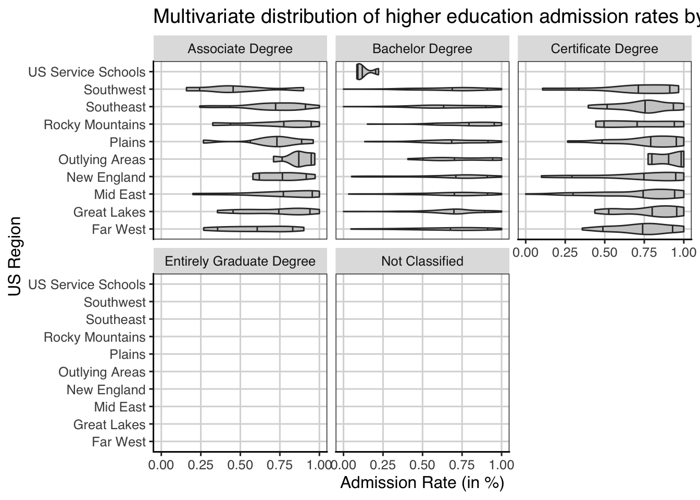